第 1 页 · 项目7
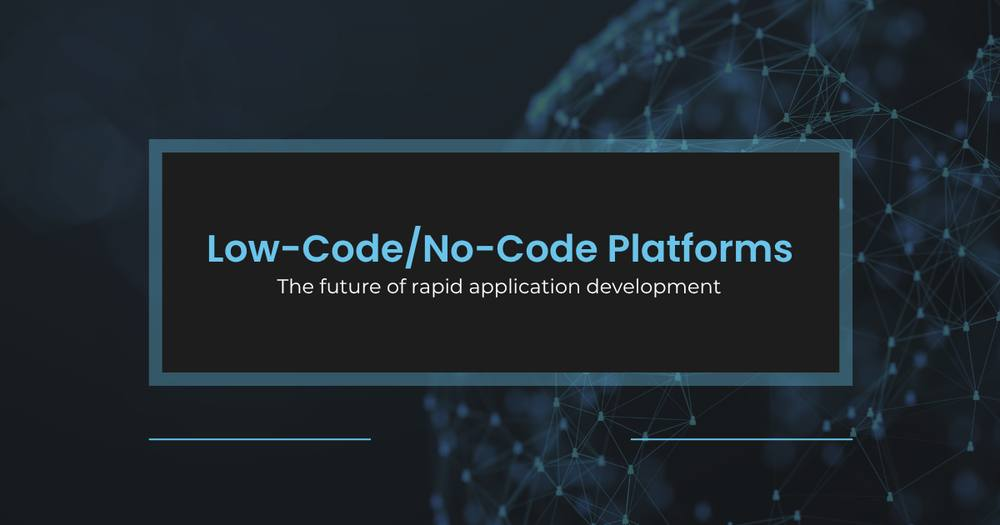
项目7
开发低代码应用
工信精品人工智能系列教材
《智能体项目开发实战（扣子）（微课版）》
第 2 页 · 目录
目录
01
低代码应用开发快速入门
02
开发业务逻辑
03
设计用户界面
04
课后实践
本项目从对话型智能体转向更完整的产品形态——低代码应用。与智能体不同，低代码应用是具备独立用户界面和复杂业务逻辑的、可独立部署的AI应用。通过本项目学习从应用规划、业务逻辑编排、用户界面设计到测试发布的全流程。
项目7 开发低代码应用
第 3 页 · 项目引入
项目引入
项目目标与引入
知识目标
了解低代码应用的特点
了解低代码应用开发环境
了解低代码应用的多端适配
能力目标
熟悉低代码应用的创建、测试与发布全流程
能够为低代码应用编排业务逻辑
能够使用用户界面编辑器
初步了解全栈低代码应用开发
素养目标
培养产品化思维
培养创新精神
提高动手能力
项目引入
前面介绍了如何创建以对话为核心的智能体，本项目转向更完整的产品形态——低代码应用。
与智能体不同，低代码应用是具备独立用户界面和复杂业务逻辑的、可独立部署的AI应用。
本项目将引领读者从零开始，熟悉从应用规划、业务逻辑编排、用户界面设计到测试发布的全流程，掌握AI能力产品化的核心技能，打造可用的AI应用。
项目7 开发低代码应用
03
第 4 页 · 7.1
7.1
低代码应用开发快速入门
了解低代码应用的特点、开发环境
掌握从应用规划到测试发布的全流程
第 5 页 · 7.1.1
7.1.1
低代码应用能做什么
基于扣子编程开发的低代码应用是独立的AI解决方案
灵活组装智能服务
核心仍然是先进的大模型
靠工作流或对话流处理复杂逻辑
像搭积木一样设计自动化流程
充分利用丰富的节点资源
多端适配能力强
适用于手机App、网站
适配多种不同终端设备
支持桌面网页端开发
支持小程序和H5端开发
多种发布渠道
API服务或Chat SDK集成
发布为微信小程序
发布为抖音小程序
部署为Web页面
低代码应用的适应性
低代码应用主要靠工作流或者对话流来处理复杂的逻辑和操作，开发者可以像搭建智能体一样充分利用扣子编程内置的丰富节点资源，像搭积木一样灵活地设计自动化流程，轻松组装出各种智能服务。
开发者可以给它配上专属的用户界面，其核心仍然是先进的大模型，使得AI能力能够以产品化的形态服务于广泛的用户群体。
项目7 开发低代码应用
06
第 6 页 · 7.1.2
7.1.2
何时选择开发低代码应用
智能体
以对话为核心交互方式
优势：快速搭建，拥有强大的对话能力
适用场景：
智能客服、个性化助手
知识问答机器人
以一问一答为主要交互方式
功能相对单一的AI伙伴
低代码应用
具备完整业务逻辑和独立UI
优势：构建复杂AI工具和业务系统
适用场景：
需要复杂的图形用户界面
涉及多步骤业务流程
填写表单、分步审核
生成并下载报告等
选择建议
当项目目标是打造以对话（一问一答）为主要交互方式，功能相对单一的AI伙伴时，优先选择智能体。
当项目需要复杂GUI、涉及多步骤业务流程，且需要处理多用户业务数据时，选择低代码应用。
项目7 开发低代码应用
07
第 7 页 · 7.1.3
7.1.3
低代码应用开发流程
扣子编程提供高效、快捷的低代码应用开发方式
Step 1
创建项目
创建低代码应用项目
自动进入IDE
进行业务逻辑编排
Step 2
编排业务逻辑
使用工作流编排业务逻辑
通过变量、插件、知识库、数据库与数据交互
提供试运行能力进行调试
Step 3
设计用户界面
丰富的组件和可视化能力
拖曳方式快速构建
组件与数据事件绑定
Step 4
测试应用
提供预览能力
实时测试应用
确保运行结果符合预期
Step 5
发布应用
发布到所选平台
扣子商店、社交平台等
或发布为API服务
项目7 开发低代码应用
08
第 8 页 · 7.1.4
7.1.4
扣子应用开发环境
扣子编程提供在线应用IDE，支持可视化编排和调试能力
业务逻辑模块
资源列表
包含工作流、插件、知识库、变量、数据库
可使用空间内已有资源，也可新建资源
配置区域
对创建或添加的资源进行配置和调试
用户界面模块
资源面板
组件、模板、结构、数据
画布
支持组件拖曳和拉伸调整大小
配置面板
"属性"调样式，"事件"绑交互
事件绑定示例
页面组件支持与开发资源的数据和事件进行绑定，快速实现前后端数据的联动。
例如：给按钮组件绑定工作流的点击事件，当用户单击按钮时，就会触发工作流调用。
项目7 开发低代码应用
09
第 9 页 · 案例实战7-1
案例实战7-1
从零开始开发一个网页端低代码应用——应用设计与界面规划
应用功能设计
应用名称：智能周报生成助手
输入 允许用户输入一周的工作摘要（可接收零散、口语化的描述）
处理 通过大模型将工作摘要自动整理、润色，生成结构清晰、语言专业的周报
输出 在页面上清晰展示生成的周报，并提供复制功能
界面规划
标题区域 应用名称，采用文本框
输入区域
多行文本框（输入工作摘要）
按钮（触发生成操作）
输出区域 采用Markdown组件展示周报
项目7 开发低代码应用
10
第 10 页 · 案例实战7-1
案例实战7-1
从零开始开发一个网页端低代码应用——创建低代码应用项目
创建低代码应用项目步骤
1 登录扣子编程，进入"项目开发"页面
2 单击"项目"或"创建"按钮，选择"低代码搭建"
3 单击"创建空白应用"
4 输入应用名称和介绍，AI自动生成图标
5 单击"确认"，进入应用IDE
项目7 开发低代码应用
10
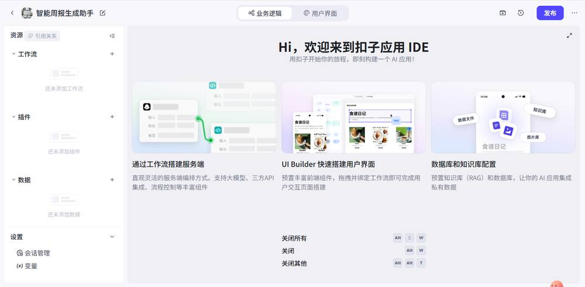
第 11 页 · 案例实战7-1
案例实战7-1
从零开始开发一个网页端低代码应用——编排业务逻辑
创建weekly_report工作流，实现周报自动生成功能
开始节点
大模型节点
结束节点
开始节点配置
输入变量名改为 work_summary
勾选"必填"复选框
用于接收用户输入的工作摘要
大模型节点配置
角色：专业秘书
技能：信息提取与归纳、结构化表达
输出格式：标准周报
（本周概述/主要工作/问题与方案/下周计划）
语言风格：正式、专业、简洁
结束节点配置
输出变量绑定大模型节点输出
返回文本设置为 {{output}}
开启流式输出
实现打字机一样的输出效果
提示：与智能体所使用的工作流需要单独发布不同，低代码应用中添加的工作流无须发布即可使用。
项目7 开发低代码应用
11
第 12 页 · 案例实战7-1
案例实战7-1
从零开始开发一个网页端低代码应用——编排业务逻辑
创建weekly_report工作流，实现周报自动生成功能
开始节点配置
输入变量名改为 work_summary
勾选"必填"复选框
用于接收用户输入的工作摘要
大模型节点配置
角色：专业秘书
技能：信息提取与归纳、结构化表达
输出格式：标准周报
（本周概述/主要工作/问题与方案/下周计划）
语言风格：正式、专业、简洁
结束节点配置
输出变量绑定大模型节点输出
返回文本设置为 {{output}}
开启流式输出
实现打字机一样的输出效果
提示：与智能体所使用的工作流需要单独发布不同，低代码应用中添加的工作流无须发布即可使用。
项目7 开发低代码应用
11
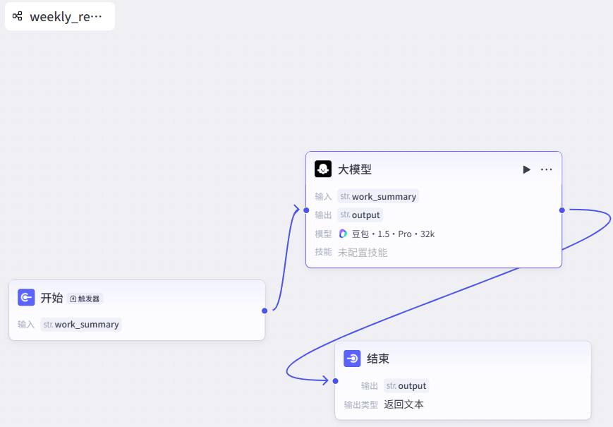
第 13 页 · 案例实战7-1
案例实战7-1
从零开始开发一个网页端低代码应用——设计用户界面
步骤1：选择UI类型
进入用户界面编辑器
选择"桌面网页"类型
单击"开始搭建"
也支持小程序和H5端
项目7 开发低代码应用
12
第 14 页 · 案例实战7-1
案例实战7-1
从零开始开发一个网页端低代码应用——设计用户界面
用户界面编辑器组成
左侧 - 资源面板 组件（UI组件）、模板（预设模板）、结构（页面和图层管理）、数据（界面变量）
中间 - 画布 支持组件拖曳，通过拉伸调整组件大小
右侧 - 配置面板 "属性"区域调整组件样式，"事件"区域绑定交互事件
扣子编程提供可视化的用户界面搭建能力，开发者可以通过拖曳的方式轻松搭建用户界面，而无须编写代码。
项目7 开发低代码应用
12
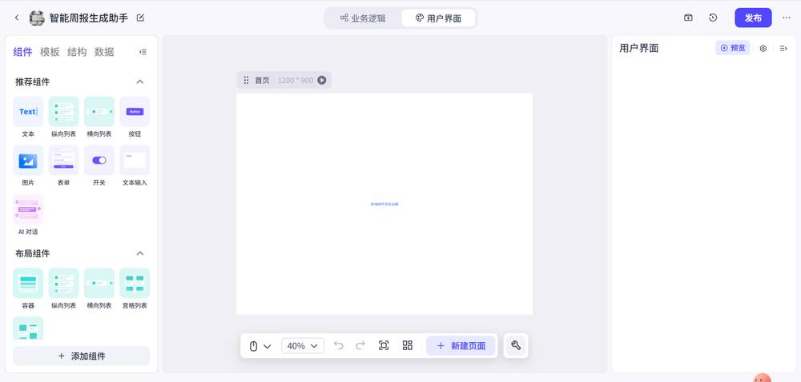
第 15 页 · 案例实战7-1
案例实战7-1
从零开始开发一个网页端低代码应用——设计用户界面
步骤2：页面结构布局
画布排列方向：纵向
Div1（标题区）：横向，100%，80px
Div2（功能区）：横向，100%，100%
Div3（输入区）：50%，600px
Div4（输出区）：50%，600px
项目7 开发低代码应用
12
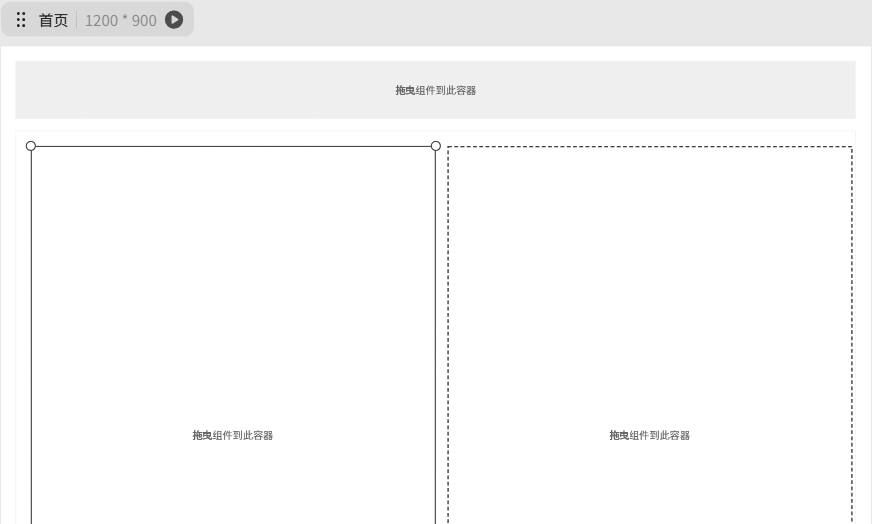
第 16 页 · 案例实战7-1
案例实战7-1
从零开始开发一个网页端低代码应用——设计用户界面
步骤3：配置组件
标题：文本组件，"标题一"样式
输入区：表单+多行文本框+按钮
按钮内容："生成周报"
输出区：Markdown组件
占位文案：周报将在这里生成
项目7 开发低代码应用
12
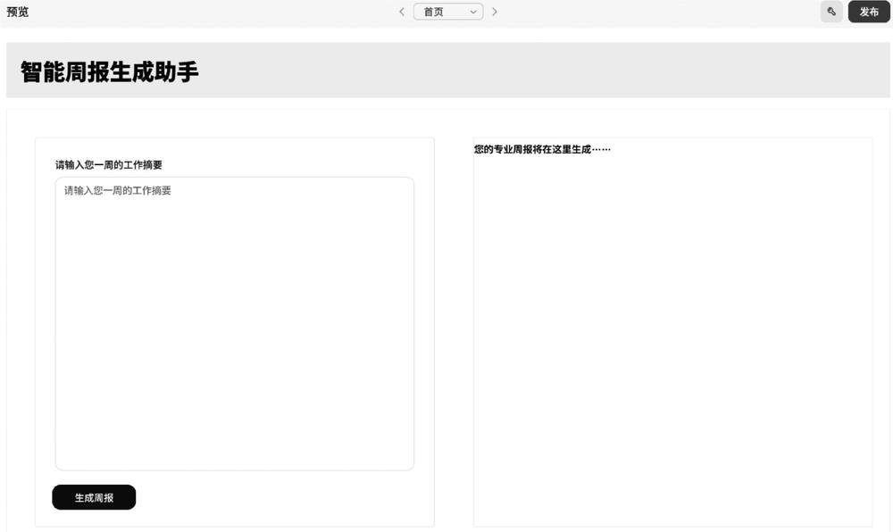
第 17 页 · 案例实战7-1
案例实战7-1
从零开始开发一个网页端低代码应用——配置事件
配置事件和数据联动
1 选中"生成周报"按钮，切换到"事件"选项卡
2 事件类型选择"点击时"
3 执行动作选择"调用工作流"
4 选择weekly_report工作流
5 参数work_summary绑定多行文本框值
6 Markdown组件内容绑定工作流返回数据
项目7 开发低代码应用
13
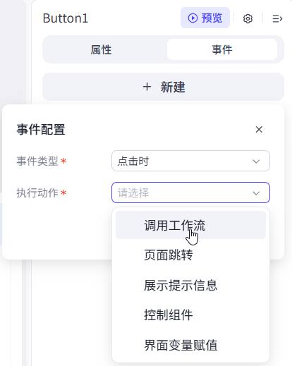
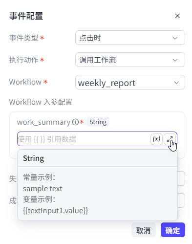
第 18 页 · 案例实战7-1
案例实战7-1
从零开始开发一个网页端低代码应用——配置事件
配置事件和数据联动
1 选中"生成周报"按钮，切换到"事件"选项卡
2 事件类型选择"点击时"
3 执行动作选择"调用工作流"
4 选择weekly_report工作流
5 参数work_summary绑定多行文本框值
6 Markdown组件内容绑定工作流返回数据
项目7 开发低代码应用
13
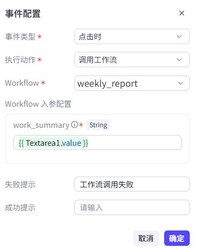
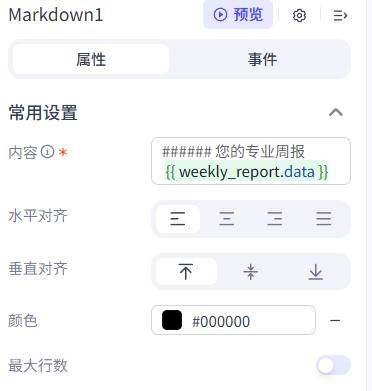
数据流转示意
用户输入摘要
触发工作流
大模型生成周报
Markdown展示
第 19 页 · 案例实战7-1
案例实战7-1
从零开始开发一个网页端低代码应用——测试发布
测试与发布
测试应用
单击"预览"打开预览页面
输入工作摘要，单击"生成周报"
验证输出区域显示格式工整的周报
发布应用
单击"发布"按钮
选择发布渠道（扣子商店等）
输入版本号和描述后发布
项目7 开发低代码应用
13
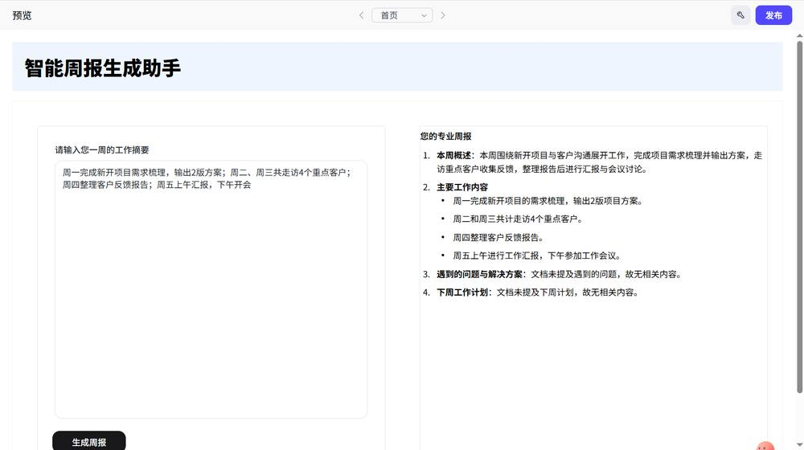
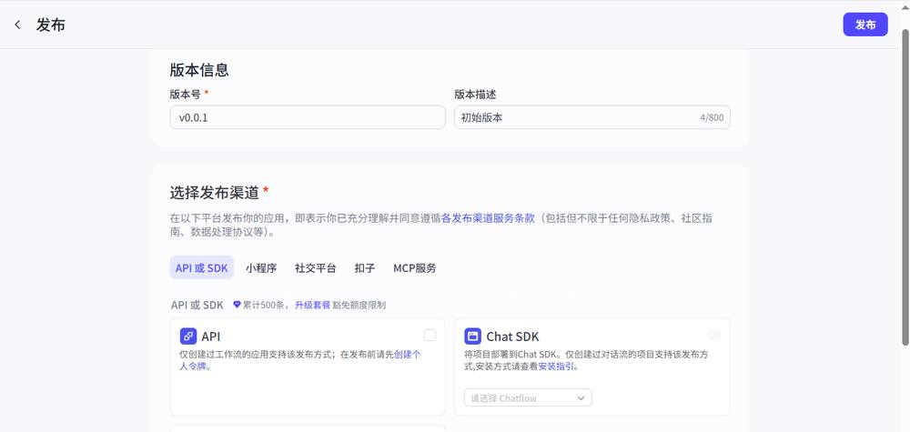
第 20 页 · 同步训练7-1
同步训练7-1
通过应用模板快速搭建低代码应用
应用模板是完整的、可运行的低代码应用，可快速复制并改造
操作步骤
1 登录扣子编程，打开应用模板页面
2 选择"城市天气画报"模板
3 单击"预览"按钮体验功能
4 输入城市名测试（如"青岛"）
5 单击"复制"按钮，设置名称和空间
6 进入应用IDE进行修改
模板搭建的优势
复制应用模板后，开发者会拥有一个与应用模板完全一样的低代码应用。
可以在此基础上将其改造为更适合自己的低代码应用，大大缩短开发周期。
适合作为学习和参考的起点，快速理解完整的应用架构。
项目7 开发低代码应用
14
第 21 页 · 同步训练7-1
同步训练7-1
通过应用模板快速搭建低代码应用
常见问题与解决
问题：工作流调用失败
原因："豆包-工具调用"模型已停止运行
解决方案：
复制应用模板后，修改工作流中使用的模型为更新版本（如"豆包·2.0·mini"）
修改后即可正常使用模板功能
项目7 开发低代码应用
14
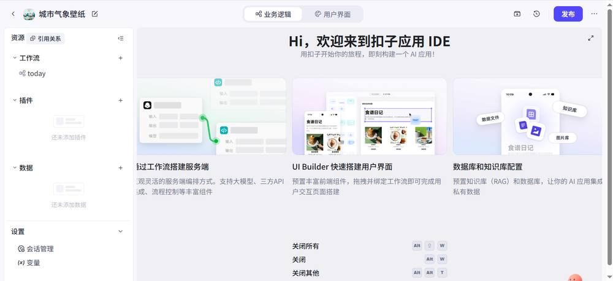
第 22 页 · 7.2
7.2
开发业务逻辑
掌握低代码应用的资源管理
业务逻辑编排和对话流配置
第 23 页 · 7.2.1
7.2.1
管理低代码应用的资源
资源存储位置
空间资源库
共享资源，可被空间内的AI应用和智能体使用
AI应用资源库
应用独享资源，默认不被其他项目使用
智能体没有独享资源，只能使用空间资源库
添加资源的方式
创建资源
直接在应用中创建工作流、插件、知识库等
引入资源
将空间资源库中已发布的资源复制到应用中
引入后修改不影响空间资源库中原有配置
资源管理操作
复制到资源库 复制一个资源到空间资源库，复制后空间资源列表中会出现一个相同配置的资源，可供其他项目使用
移动到资源库 将资源从应用中移动至空间资源库，移动后资源不再属于这个应用，但使用这些资源的节点不会受到影响
删除资源 选中资源后选择"删除文件"，资源被删除后不可恢复，应谨慎操作，确保删除后不影响应用运行
项目7 开发低代码应用
16
第 24 页 · 7.2.2
7.2.2
编排业务逻辑——工作流的使用
工作流是低代码应用的核心部分，相当于应用的"发动机"
工作流的核心作用
决定应用的输入输出数据结构、接收和处理数据的规则以及决策流程
定义数据在应用中的完整生命周期——从接收输入，经过判断与加工，到最终产生输出
复杂业务逻辑可能需要多个工作流才能实现
简单业务逻辑
使用一个工作流
配合基础节点即可实现
例如：文本生成、数据转换等单一功能
复杂业务逻辑
需要多个工作流协同
不同工作流处理不同业务环节
例如：数据记录+报告生成等多环节业务
测试方法
主要通过测试工作流运行结果
验证是否符合预期
使用试运行功能进行调试
关键提示：低代码应用中的工作流无须单独发布即可使用，与智能体中的工作流不同。
项目7 开发低代码应用
17
第 25 页 · 7.2.2
7.2.2
编排业务逻辑——插件与变量的使用
插件的使用
低代码应用中不能直接使用插件
需通过工作流的插件节点使用
可用插件来源：
插件商店中的公共插件
空间中已发布的插件
应用内部创建的专属插件
变量的类型
系统变量 平台预定义变量
用户变量 用户自定义变量
应用变量 内存变量（低代码应用特有）
应用变量每次执行工作流自动恢复默认值
可读可写，是连接UI组件与工作流的关键桥梁
应用变量的应用场景
状态跟踪
跟踪用户状态，如猜谜游戏中的score变量，每猜对加1，新一局重置为0
缓存数据
存储频繁访问的数据，如定义news变量存储每日最新AI新闻，减少数据库查询
应用变量就像游戏中的生命值——每次开始新的一局游戏时，生命值都会重置为游戏设定的初始值。
变量控制用户界面状态与数据流转，既可用于存储用户对话状态，也是连接前端UI组件与后端工作流数据的关键桥梁。
项目7 开发低代码应用
18
第 26 页 · 案例实战7-2
案例实战7-2
个人健康数据看板——创建应用与数据库
个人健康数据看板 —— 为用户量身定制的"AI健康管家"
创建应用
应用名称：个人健康数据看板
应用介绍：为用户量身定制的"AI健身管家"，自动记录、分析并可视化用户的健康数据
创建空白应用后进入业务逻辑页面
搭建两个工作流：add_record 和 query_report
创建数据库
数据表名称：health_records
6个字段：
record_type（记录类型）
record_content（记录内容）
record_value（记录数值）
record_unit（记录单位）
temperature / humidity（温度/湿度）
| 字段名 | record_type | record_content | record_value | temperature | humidity |
| 含义 | 记录类型 | 记录内容 | 记录数值 | 温度 | 湿度 |
| 示例值 | 运动/体征/饮食 | 跑步5公里 | 5 | 25°C | 60% |
| 数据来源 | 用户输入 | 用户输入 | 用户输入 | 天气插件 | 天气插件 |
项目7 开发低代码应用
19
第 27 页 · 案例实战7-2
案例实战7-2
个人健康数据看板——搭建add_record工作流
记录个人健康数据，功能：获取天气→写入数据库→返回确认信息
开始节点
获取健康数据
插件节点
获取天气数据
新增数据节点
写入数据库
大模型节点
返回确认信息
开始节点
设置多个输入变量：
record_type, record_content
record_value, record_unit
city（用于获取天气）
获取用户记录的健康数据
插件节点配置
搜索"高分天气"插件
添加getNowAndForecastWeather工具
place = 开始节点的city
realtime = true
获取实时温度和湿度作为环境信息
数据库与大模型
新增数据节点
数据表：health_records
温度/湿度 = 插件输出
其他字段 = 开始节点输入
大模型节点
返回记录添加成功信息
项目7 开发低代码应用
20
第 28 页 · 案例实战7-2
案例实战7-2
个人健康数据看板——搭建add_record工作流
记录个人健康数据，功能：获取天气→写入数据库→返回确认信息
项目7 开发低代码应用
20
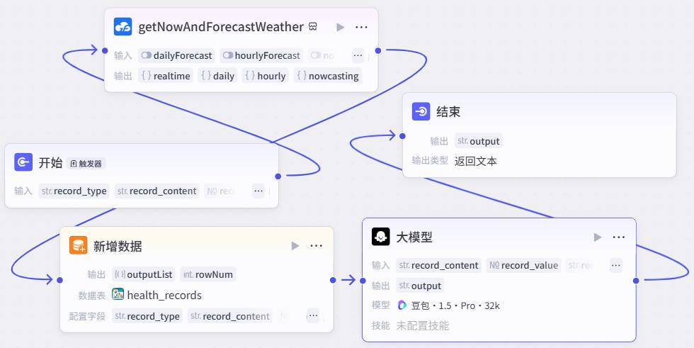
第 29 页 · 案例实战7-2
案例实战7-2
个人健康数据看板——搭建query_report工作流
查询个人健康数据并生成总结报告
开始节点
查询条件
插件节点
获取当前时间
大模型节点
解析时间范围
查询数据节点
从数据库查询
大模型节点
生成报告
获取当前时间
搜索"现在时间"插件
添加get_current_datetime工具
获取当前日期和时间
以格式化字符串返回
解决大模型对当前时间的误判问题
解析时间与查询
解析时间节点
大模型解析时间范围
输出time_start和time_end
查询数据节点
数据表：health_records
按bstudio_create_time字段匹配起止时间
生成报告
生成报告节点
分析查询到的健康数据
生成总结报告
连接结束节点
输出变量output绑定报告内容
开启流式输出效果
项目7 开发低代码应用
21
第 30 页 · 案例实战7-2
案例实战7-2
个人健康数据看板——搭建query_report工作流
查询个人健康数据并生成总结报告
项目7 开发低代码应用
21
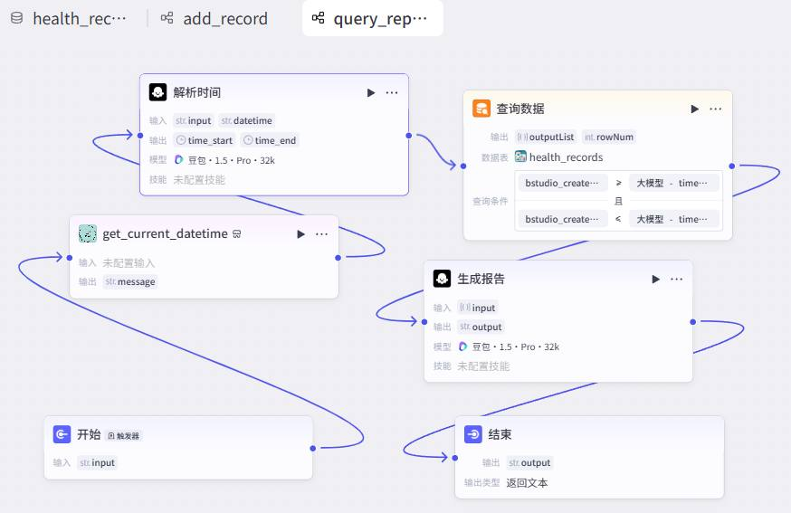
第 31 页 · 案例实战7-2
案例实战7-2
个人健康数据看板——设计用户界面
用户界面设计
选择"桌面网页"类型
标题区域："个人健康数据看板"
输入区域（两个表单）：
Form1：记录数据（3文本框+1下拉列表+1数字框+1按钮）
Form2：生成报告（1文本框+1按钮）
输出区域：两个Markdown组件
项目7 开发低代码应用
22
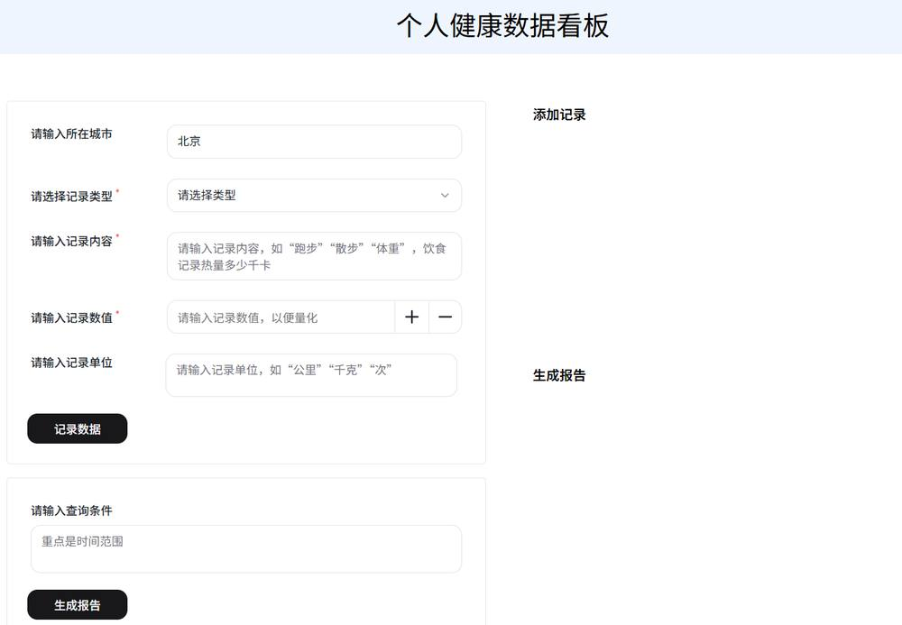
第 32 页 · 案例实战7-2
案例实战7-2
个人健康数据看板——配置事件
事件配置
"记录数据"按钮
调用add_record工作流
显示Markdown1，隐藏Markdown2
"生成报告"按钮
调用query_report工作流
隐藏Markdown1，显示Markdown2
组件显示控制逻辑
记录数据流程
单击Button1 → 调用add_record → 显示Markdown1（记录结果）→ 隐藏Markdown2
生成报告流程
单击Button2 → 调用query_report → 隐藏Markdown1 → 显示Markdown2（报告结果）
通过为按钮添加控制组件的事件，实现单击不同按钮时显示不同的输出区域。
控制组件方法选择"设置隐藏"，"何时隐藏"设置为"触发后组件设置为显示/隐藏"。
项目7 开发低代码应用
22
第 33 页 · 案例实战7-2
案例实战7-2
个人健康数据看板——测试应用
项目7 开发低代码应用
22
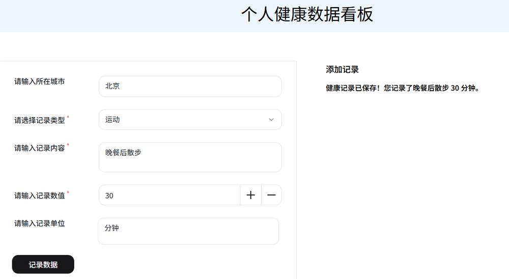
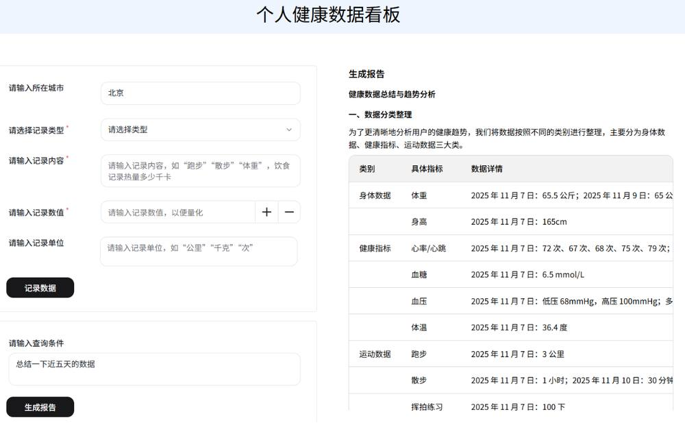
第 34 页 · 7.2.3
7.2.3
为低代码应用编排对话流
对话流的核心优势在于能够更好地处理需要上下文关联的连续交互逻辑
对话流的核心特性
每个对话流与特定对话绑定
可从绑定对话中读取历史消息
新输入输出被记录到对话中
存储两类信息：
用户的输入 + 对话流的输出
两种对话类型
静态对话
开发者在对话管理页面手动创建
每个对话流需绑定一个静态对话
动态对话
运行时由创建对话节点自动创建
仅用于调试和体验，与线上数据隔离
对话管理与配置要点
与智能体对话时，平台自动创建并管理对话，无须开发者干预。
从头搭建对话型应用时，需要开发者主动配置：创建对话流 + 关联对话。
可在对话管理页面查看已写入的全部消息，直接创建静态对话（默认不与任何对话流绑定）。
通过对话流开始节点的CONVERSATION_NAME参数进行绑定。
项目7 开发低代码应用
24
第 35 页 · 同步训练7-2
同步训练7-2
将AI健身教练智能体升级为低代码应用
实现H5页面交互，将已有的对话流作为低代码应用的后端逻辑
步骤1：创建应用并集成现有工作流
创建新应用"个人专属AI健身教练"
进入业务逻辑页面
单击"+"选择"导入资源库文件"
从资源库选择已发布的对话流
fitness_coach
单击"复制到应用"
关键要点
不是修改原有智能体，而是创建一个新应用来调用已有的对话流。
复制对话流后，可以直接调用，也可以调整修改后再调用。
对话流开始节点默认包含USER_INPUT和CONVERSATION_NAME两个输入变量，用于接收用户当前输入和指定对话名称。
每个应用都有一个名为Default的默认静态对话，不可被删除或重命名。
项目7 开发低代码应用
23
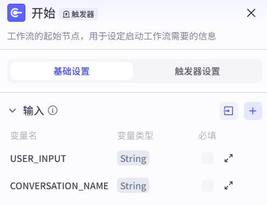
第 36 页 · 同步训练7-2
同步训练7-2
将AI健身教练智能体升级为低代码应用
实现H5页面交互，将已有的对话流作为低代码应用的后端逻辑
步骤2：设计H5界面
选择UI类型"小程序和H5"
关闭页面导航栏
从"AI组件"中拖入AI对话组件
设置AI对话组件属性：
对话流 = fitness_coach
项目7 开发低代码应用
23
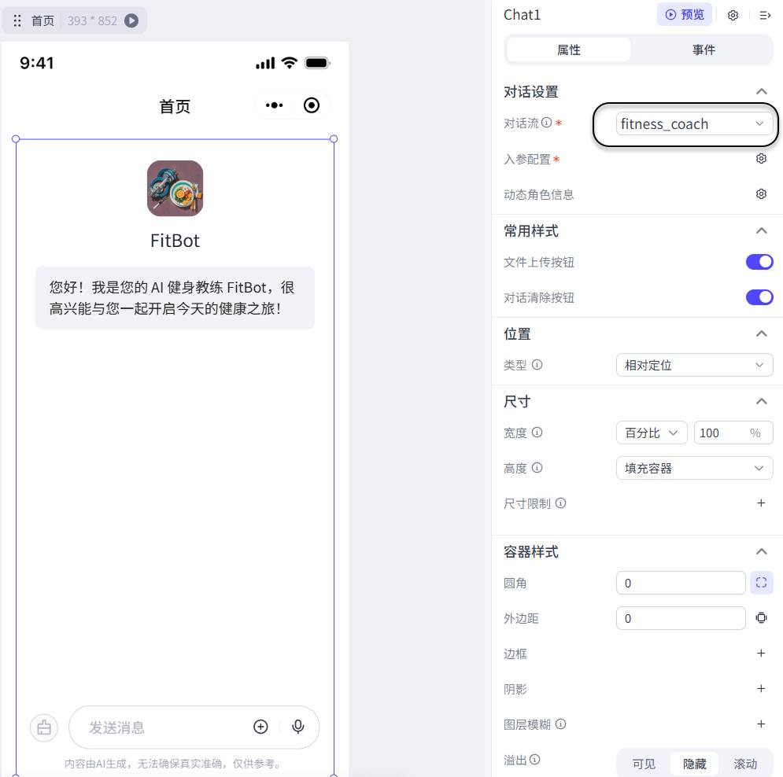
第 37 页 · 同步训练7-2
同步训练7-2
将AI健身教练智能体升级为低代码应用
实现H5页面交互，将已有的对话流作为低代码应用的后端逻辑
步骤3：测试与考察
单击"预览"测试应用
输入健身需求进行对话
测试多轮对话能力
验证基于上下文的连贯应答
考察对话管理中写入的消息记录
项目7 开发低代码应用
23
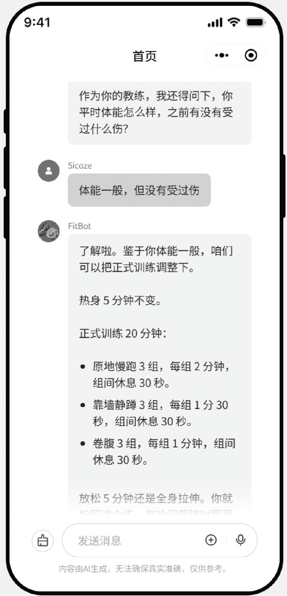
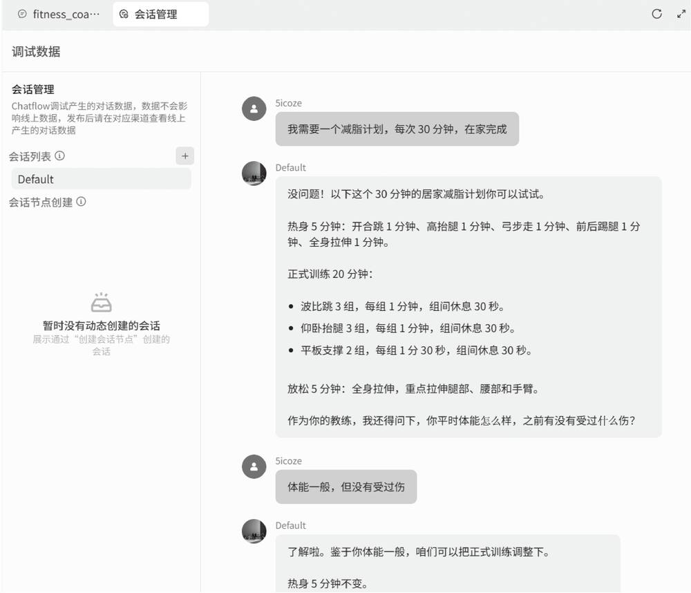
第 38 页 · 7.3
7.3
设计用户界面
掌握用户界面编辑器的使用
设计流程和跨平台适配
第 39 页 · 7.3.1
7.3.1
进一步了解用户界面编辑器
丰富的组件
覆盖基础按钮、文本到复杂表单等多种组件，满足不同界面搭建需求
组件事件绑定
支持为组件配置事件处理程序，轻松实现复杂的交互逻辑
多平台支持
支持桌面网页端、小程序和H5端的用户界面开发，实现跨平台一致体验，一套代码多端运行
拖曳式搭建
无须编写代码即可将组件与后台工作流的数据和事件绑定
自定义样式
可调整颜色、字体、大小等外观属性，实现个性化页面设计
高性能渲染
即使构建复杂页面，也能保持流畅的用户体验和响应速度
用户界面编辑器作为扣子编程的前端低代码工具，既提供了一般前端低代码工具的通用搭建能力，又提供了调用扣子内各项资源的能力。
将用户界面编辑器与工作流、插件、知识库、数据库等结合，开发者可以搭建出前后端兼具的全栈AI应用。
项目7 开发低代码应用
26
第 40 页 · 7.3.2
7.3.2
用户界面设计流程
Step 1
创建页面
使用用户界面编辑器搭建
首先需要创建一个新页面
为后续添加组件提供基础
Step 2
添加组件
添加所需UI组件
按钮、文本框、列表等
满足不同设计需求
Step 3
设置内容参数
为输入类型组件
设置内容参数
（此步为可选）
Step 4
设置属性事件
设置组件属性
绑定交互事件
实现交互功能
Step 5
预览页面
预览检查
显示效果
交互逻辑
项目7 开发低代码应用
27
第 41 页 · 7.3.3
7.3.3
网页端与移动端用户界面
两类用户界面的布局组件高度一致，区别体现在特有组件上
| 对比项 | 网页端 | 移动端 | 说明 |
| 展示组件 | 徽章、代码展示器、视频 | 音频、轮播 | 网页端偏向富媒体展示；移动端优先支持音频和轮播图 |
| 输入组件 | 开关、代码编辑、文件上传 | 单行输入、多行输入、单选按钮 | 网页端提供精确操作组件；移动端优化触控输入体验 |
| 导航组件 | 无独立导航组件 | 标签栏 | 网页端通过页面布局实现导航；标签栏是移动端标准模式 |
高度一致性
两类用户界面的布局组件都包括纵向列表、横向列表、宫格列表、瀑布流列表、容器等，具有高度一致性。
AI组件都提供AI对话，保证了基于对话流的AI应用体验在跨平台时保持一致。
项目7 开发低代码应用
28
第 42 页 · 同步训练7-3
同步训练7-3
搭建多页面低代码应用
在"城市天气画报"基础上增加一个英文壁纸页面
修改工作流
将模型改为更新版本
添加"英文翻译"大模型节点
翻译city、condition、date、poetry
将翻译节点与结束节点连接
项目7 开发低代码应用
29
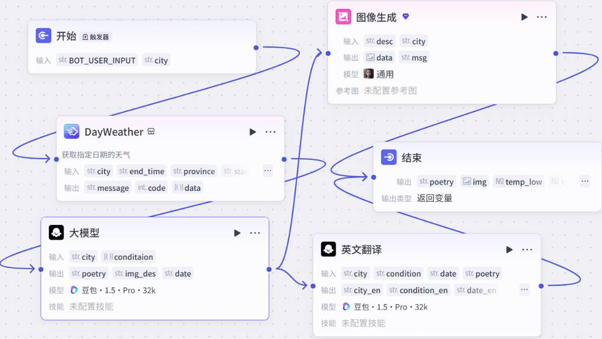
第 43 页 · 同步训练7-3
同步训练7-3
搭建多页面低代码应用
在"城市天气画报"基础上增加一个英文壁纸页面
增加页面
复制页面2创建页面3
修改文本组件显示英文内容
将按钮改成"Change city"
删除页面3的加载时工作流调用
项目7 开发低代码应用
29
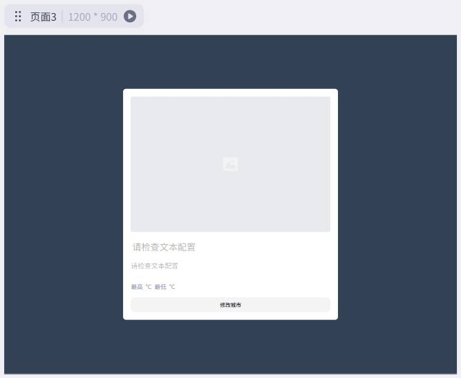
第 44 页 · 同步训练7-3
同步训练7-3
搭建多页面低代码应用
在"城市天气画报"基础上增加一个英文壁纸页面
添加跳转
在页面2添加"英文壁纸"按钮
配置点击时跳转到页面3
使用界面变量解决参数传递
测试中英文壁纸切换功能
项目7 开发低代码应用
29
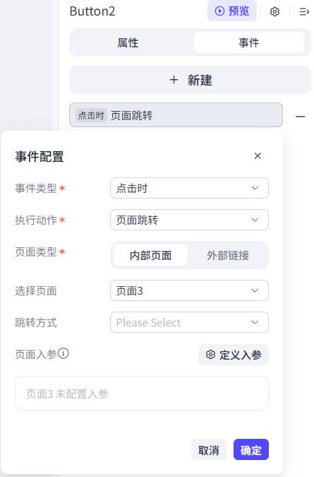
第 45 页 · 同步训练7-3
同步训练7-3
搭建多页面低代码应用
在"城市天气画报"基础上增加一个英文壁纸页面
解决工作流调用失败问题
问题原因：页面2直接调用today工作流时无法获取参数query.city的值
根本方案 将参数改为应用专属的界面变量：
1. 在"数据"选项卡中新建界面变量"city"
2. 为首页"确认"按钮添加界面变量赋值事件（city = Textarea1.value）
3. 修改Page2调用工作流时city值改为界面变量city的value值
项目7 开发低代码应用
29
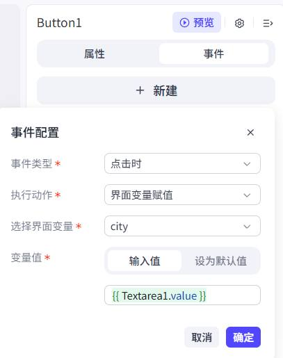
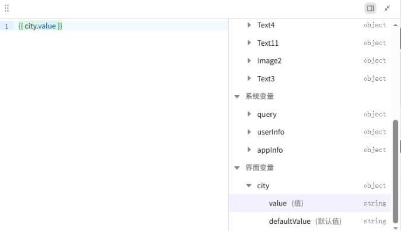
第 46 页 · 同步训练7-3
同步训练7-3
搭建多页面低代码应用——测试
在"城市天气画报"基础上增加一个英文壁纸页面
项目7 开发低代码应用
29
第 47 页 · 同步训练7-4
同步训练7-4
调试低代码应用
扣子编程支持低代码应用搭建调试台，助力开发者快速定位及解决问题
调试面板功能
实时对页面组件属性及交互事件配置进行调试
验证组件功能与交互逻辑是否符合预期
默认显示"时间线"选项卡
提供组件交互事件的实时运行视图
便于追溯事件执行过程
时间线信息
触发事件的组件名称
事件类型和触发动作
执行的时间点和耗时
事件执行状态和顺序
支持筛选和清除时间线内容
调试操作步骤
1 进入应用编辑页面，打开用户界面编辑器
2 单击"预览"按钮，输入测试内容并触发操作
3 单击预览页面右上角的调试按钮，展开调试面板
4 在时间线中查看事件执行过程，跟踪工作流运行状态
5 查看运行状态、总耗时、输入参数和输出结果
项目7 开发低代码应用
30
第 48 页 · 7.4
7.4
课后实践
通过实践任务巩固低代码应用开发的全流程技能
第 49 页 · 7.4
7.4
课后实践任务
1
开发个性签名生成器
开发网页端低代码应用并进行测试与发布
用户可在文本框中输入自己的名字和喜欢的风格（如"古风""酷炫""幽默"）
单击"生成"按钮后，调用工作流和大模型生成个性签名并显示在网页中
2
选择应用模板快速搭建
从扣子编程中选择一个应用模板
快速搭建低代码应用
复制模板后进行简单定制化，创建自己的应用
3
升级智能体为低代码应用
将项目5的案例实战5-2中的智能体
升级为低代码应用
为其设计用户界面，实现图形化交互
4
适配移动端并调试
将案例实战7-2中低代码应用的用户界面
改为移动端用户界面
并进行调试，确保功能正常运行
项目7 开发低代码应用
32
第 50 页 · 项目总结

项目总结
开发低代码应用
01 低代码应用开发全流程
02 业务逻辑编排（工作流/插件/变量）
03 用户界面设计与事件配置
04 测试、调试与发布
05 对话流与多页面应用
《智能体项目开发实战（扣子）（微课版）》
人民邮电出版社